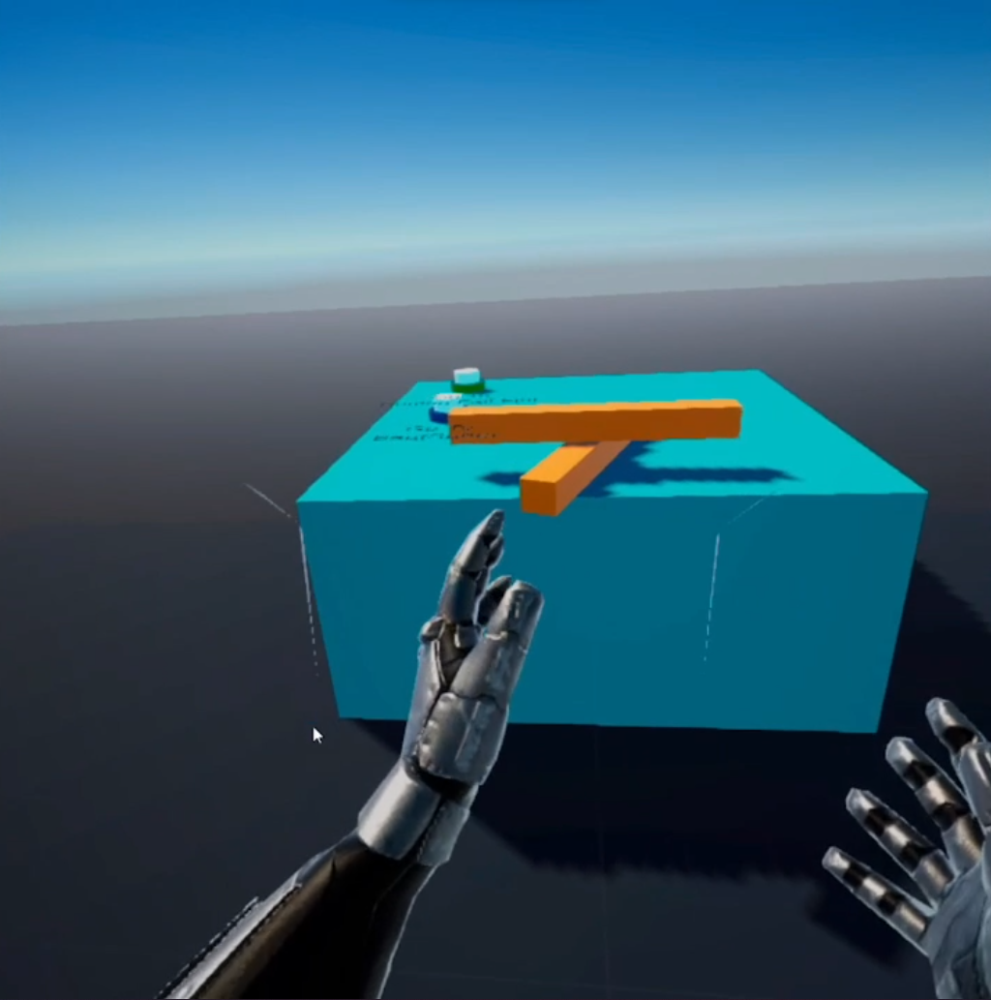
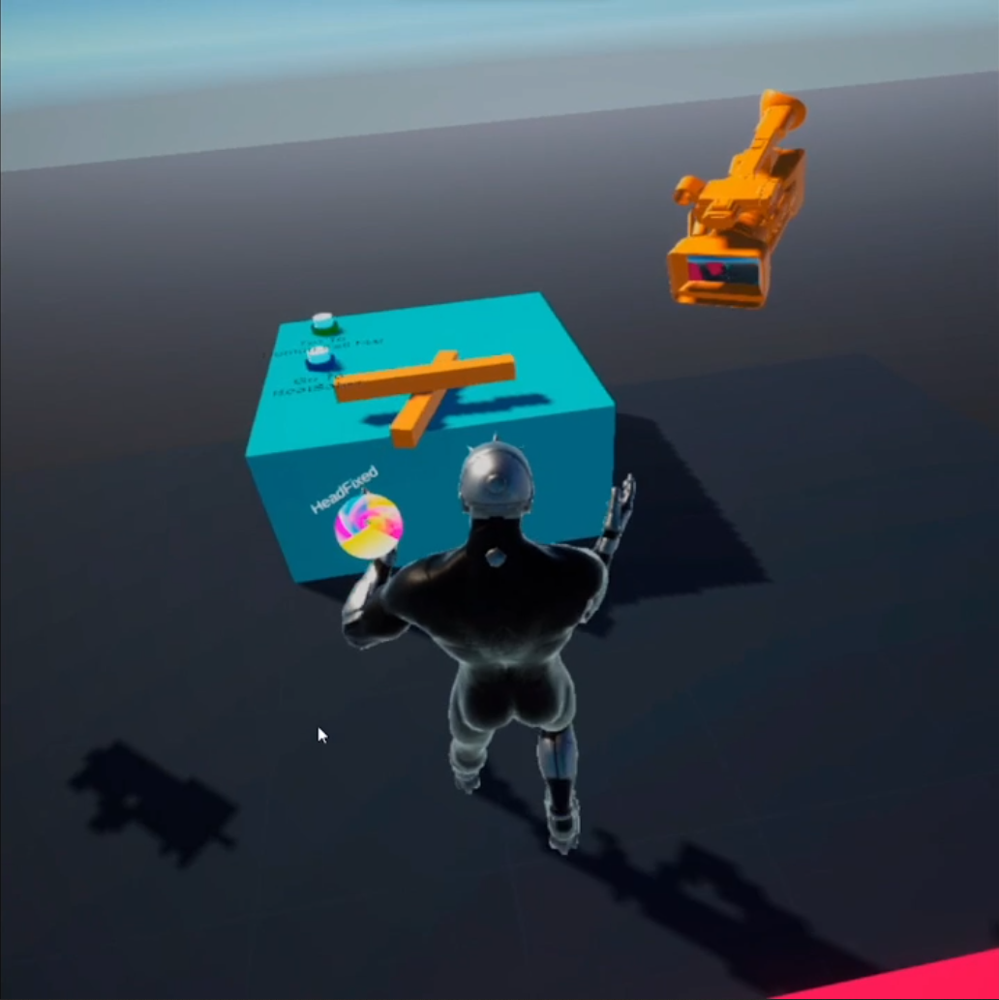
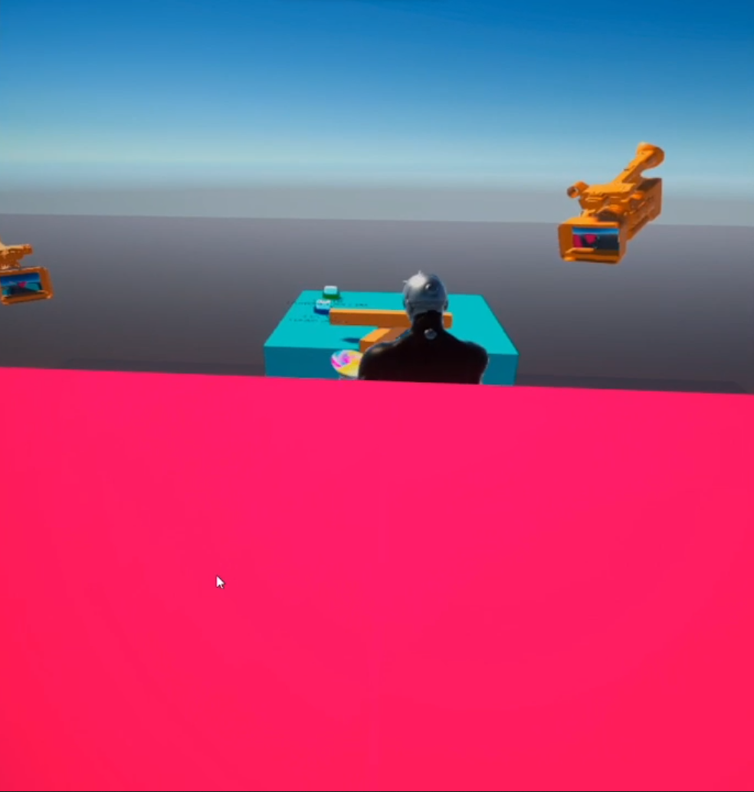
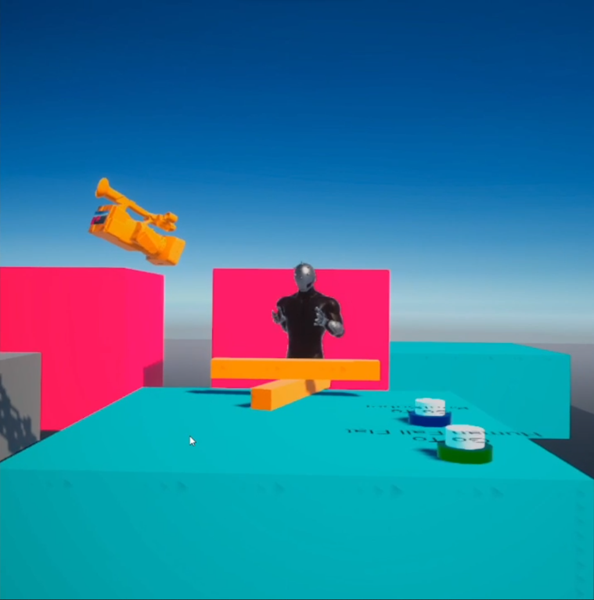
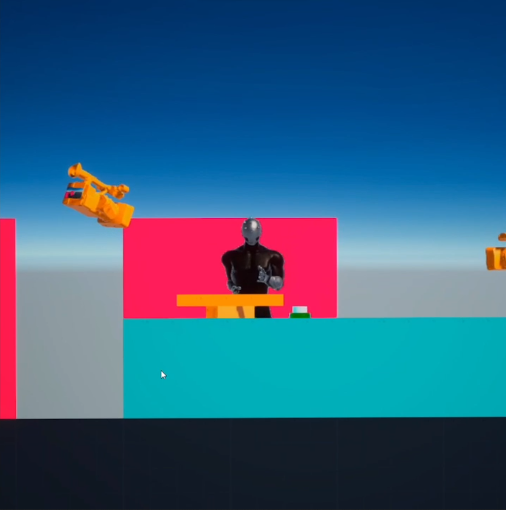
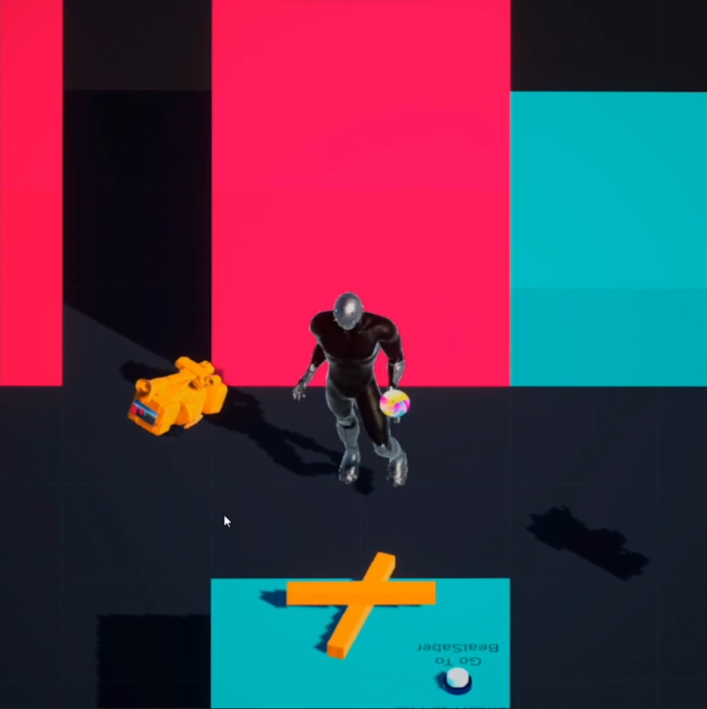
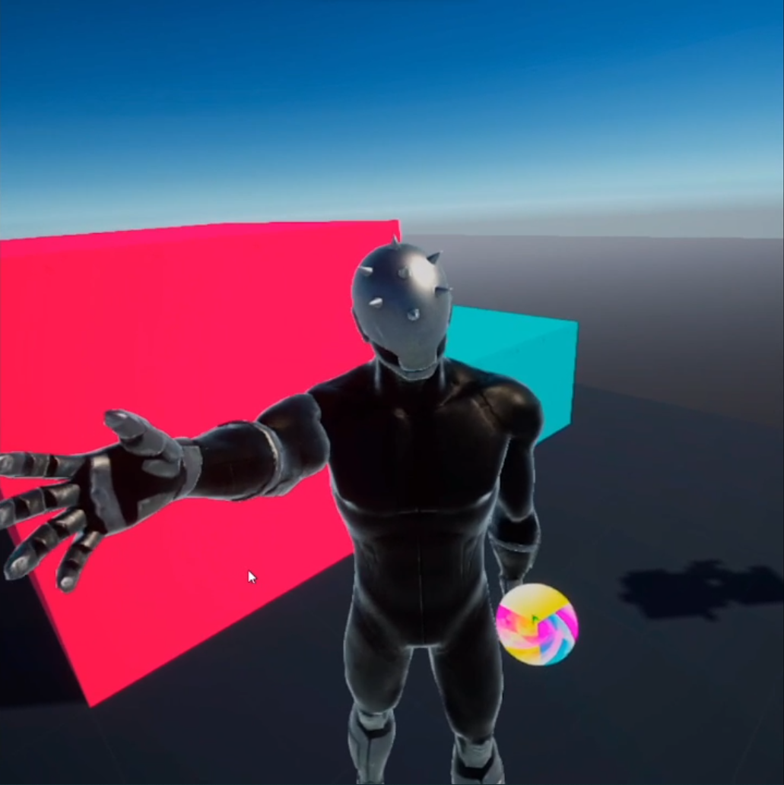
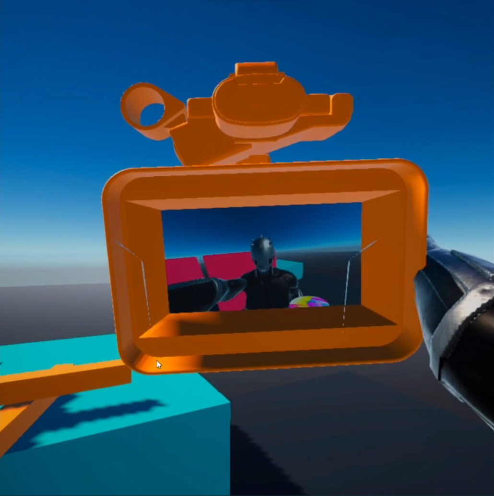
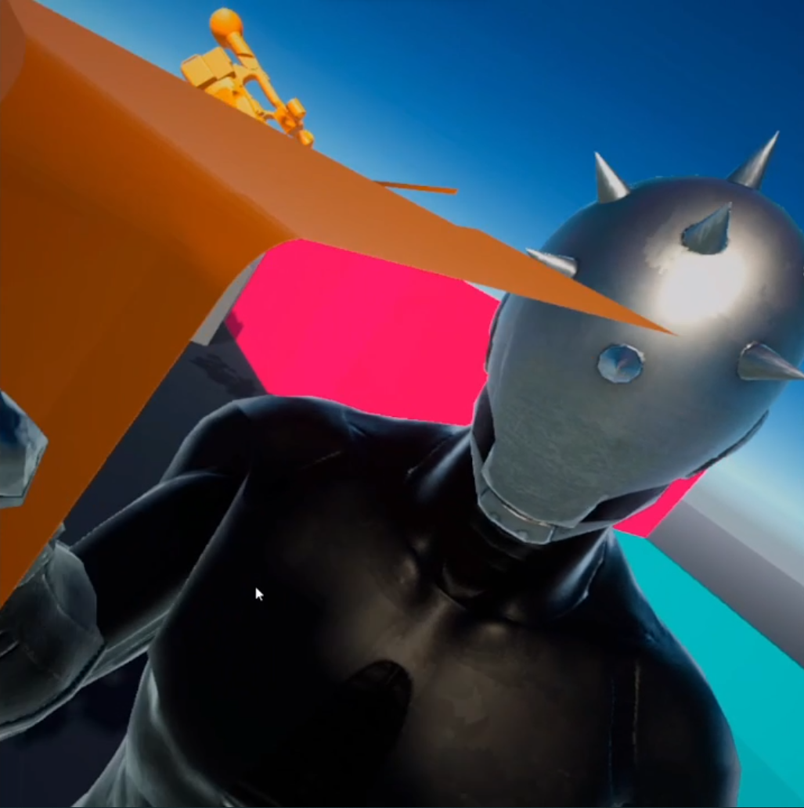

Abstract
This project aims at exploring the possibilities offered by the use of non conventional camera perspectives in Virtual Reality (VR) applications, especially in the field of VR video games.
In its final state, the project is composed of a VR application runnable on Oculus Quest 2 devices where the user can access a sandbox scene with multiple camera perspectives
to try, and 2 concrete use cases.
This project had been realized by Louis Ginesy, and guided by Jan Gugenheimer.
Motivation & State of the Art
Camera perspective is an aspect of video games that has evolved and seen a lot of new approaches through time.
Some define a whole gendra, like the first person perspective for the first person shooters, or the 2D side camera for the 2D platformers.
However in the vast majority of VR games, the only camera perspective used is the first person perspective (1PP), like on the left image below (from Super Hot).
The few exceptions usually use a God-like Perspective which is actually a 1PP in disguise as the player incarnates a giant creature but
still sees the world from its eyes, like on the right image below (from Skyworld).
Thus comes the question: Are non-first person perspectives suitable for VR games ?
Actually, some researchers have already tried to tackle this topic. Among all the literature found, the following papers particularly retain my attention:
- 3PP-R: Enabling Natural Movement in 3rd Person Virtual Reality | Inan Evin, Toni Pesola, Maximus D. Kaos, Tuukka M. Takala, Perttu Hämäläinen
- Characterizing first and third person viewpoints and their alternation for embodied interaction in virtual reality | Henrique Galvan Debarba, Sidney Bovet, Roy Salomon, Olaf Blanke, Bruno Herbelin, Ronan Boulic
- Characterizing embodied interaction in First and Third Person Perspective viewpoints | Henrique G. Debarba, Eray Molla, Bruno Herbelin, Ronan Boulic
- Keep my head on my shoulders ! why third-person is bad for navigation in VR | Daniel Medeiros, Rafael K. dos Anjos, Daniel Mendes, João Madeiras Pereira, Alberto Raposo, Joaquim Jorge
- First- and Third-Person Perspectives in Immersive Virtual Environments: Presence and Performance Analysis of Embodied Users | Geoffrey Gorisse, Olivier Christmann, Etienne Armand Amato, Simon Richir
In general those papers compare the first person with the third person perspective on one or two specific aspects that are usually performance related (navigation, precision...) or an immersion related aspect (space awareness, embodiment...).
Our goal in this project is to instead propose a global comparison of several alternative camera perspectives, including the third person one but not only. Plus, we want to compare them on several aspects at a time,
including some of the ones studied by the current literature, but also one that I didn't encounter during my research process: the amount of fun and enjoyment brought by the use of a new camera perspective.
Implementation
Generalities
The project is implemented using the Unity game engine, and all the code is written in C#.
The basis of the VR interactions are handled by the OpenXR and XR Interaction Toolkit plugins.
The application is built for and tested on an Oculus Quest 2, which is a fully autonomous VR Headset.
The Quest 2's operating system is Android, therefore the resulting built application is an .apk file.
The complete project is available on Github.
Camera Projection
The fundamental aspect of the project is to have the active camera not being in 1PP. To achieve this effect, there are several possibilities to explore. But first, let's take a look at the camera setup in the standard 1PP situation:
In this scene (left image), the player is represented by the black wireframed cylinder. At his head's position, a camera (represented by a black pyramid)
is placed to act as his eyes. Each frame, the camera renders the scene, and that's what the player sees (right image).
Because of that, we'll call this camera the View Camera.
To have another point of view, the most straightforward solution is to move the View Camera to the desired position and eventually change its behavior too (for example, make it locked in translation or rotation on a certain axis). However this method can be quite heavy to set up and execute as for each new perspective the
application may potentially have many sub-operations to perform at every perspective swap.
Instead we decided to use the "Project on Plane" trick.
This method works in 2 steps: first we create a new camera that fits the wanted perspective and that always has the corresponding behavior (see image below).
At each frame this new camera will render the scene, including the player, and save that render into a render texture. The render texture is stored in memory but not directly displayed on the VR device’s screen.
The second step is to project that render texture on a plane placed in front of the View Camera. We call this plane the Projection Plane. Note that the View Camera still follows the player's head movement like in 1PP. Then the View Camera only renders the Projection Plane (with the projected texture on it). And this second render is what the player eventually sees (right image below).
The advantage of this second method is that it makes the creation of new perspectives and the swap between them really easy: to do so, one only needs to create a new camera gameobject and set it up once. Then to change the perspective used one just has to change which projection texture/Projection Plane is seen by the View Camera.
Scenes
The application itself is composed of 3 different scenes.
The starting one has the role of an experimentation and learning zone for new players. The two others are attempts of concrete applications that use alternative camera perspectives.
Main Scene: Sand Box
The first scene of the application is the Main scene.
It's basically a sandbox scene where the player can experiment with different camera perspectives in a simple environment.
This one is composed of a ground and a few human size boxes. On the table at the center, there are 2 buttons that allow to go the other scenes, as well as
two orange sticks that the player can grab with his hands. He can jump by pressing the A button on his controllers. The player can also move/rotate his avatar with his
joysticks or by physically moving in the real world. In case the user reaches the limit of his playground in the real world, he can press the B button to temporary block
his avatar's rotation. When the rotation is blocked, the screen turns gray.
To explore the different camera perspectives that are available, the player can toggle the camera selection mode with the Y button. In this mode, a colored circle with a green arrow
will be visible on the avatar’s left hand. He can then use his left joystick to change the active camera instead of moving the avatar.
The perspectives accessible here are:
- 1PP: The default perspective, mainly here to serve as comparison reference for the other perspectives.
 - 3PP: A third person perspective where the camera is still linked to the head like in 1PP, but with an offset. Pressing the X button out of the perspective selection mode
will allow the user to adjust that offset using his left joystick.
 - TopDown: In this perspective, the camera follows the avatar translations and rotations induced by the joystick inputs, but ignores the ones due to a real life movement.
 - Side Perspective: Here the camera is placed as if the game was in 2D. The camera render is still done with an effect of perspective. The camera follows the lateral and vertical
translations of the player, but not his rotation nor his movement in the camera's normal direction.
 - Side Orthographic: The same camera perspective as the previous one, but here with an Orthographic/Isometric render (i.e. without perspective).
 - Angled Side Orthographic: Another variant of the previous camera, but here the camera is a bit lifted up and looks down to the player. The render is Orthographic here too.
 - Real Camera: This camera is parented to a physical object (the big orange camera on the right) that the player can push or grab.
  - Real Camera with Free Rotation: The same perspective as the previous one, but in addition this camera will replicate the head rotations performed while the camera is used. This allows to
look around more easily and makes the camera more pleasant to use.

Use Case n°1: Beat Saber in 3PP
For the first of our concrete use cases, we wanted something that could take advantage of the 3PP. Indeed, among all the alternative perspectives we've tried, it's the one that felt the most natural to learn and pleasant to use. To take advantage of that 3PP, a good gameplay we thought of is the one from the game
Beat Saber.
Beat Saber is a game where the user has two sabers of different colors, and has to slice colored cubes that come at him in rhythm with a music.
To score has much points as possible, the user has to slice all the cubes with the right saber (i.e. the one that has the cube's color) and in the direction
indicated by the arrow on the cube. In the standard game mode, the cubes appear in front of the user. But a 90° and a 360° modes exist where the cubes can also come from the sides (cf example on the image below).
We decided to get inspiration from those modes in particular. Indeed the literature I've read states that the 3PP provides a better space awareness than 1PP. Having to slice cubes coming from any direction thus seemed to us to be a great way to take advantage of that additional awareness.
The elaboration of that use case has been completed in two phases. Firstly, I tried to replicate the original Beat Saber's gameplay with few alterations. This includes the block slicing with 2 different colors,
the slice direction detection, and the possibility to make cubes appear always from the same fixed direction or from any direction in 360 randomly. Later I also added the option to make the cubes
appear in a random direction but not too far from the previous apparition in order to avoid forcing the player to turn back too frequently.
The musical/rhythm part of the game has been forgotten because it would have required consequent additional development time in a feature that has no interest for our topic.
Instead, the cubes appear periodically after a fixed delay at a randomly choose position.
After a short test session on this implementation with other researchers, few modifications have been decided to make it more suitable for 3PP.
First of all, the player's avatar has been made semi-transparent in order to make sure the player would always see his sabers and the cubes. This effect has been realized with
a dither filter as it still provides the sensation of a physical presence from the avatar while making it possible to see through it. The other modifications concerned the cubes. To be easier to hit in
3PP they have been sized up, and the slice direction isn't taken into account anymore. Actually now the saber only need to touch a cube to slice it.
Beside those modifications, few additions had been made as well.
I added the possibility to change the cut saber tolerance:
- One color per saber and both sabers able to slice all the cubes
- One color per saber but only the correct saber can make slice the cube (touching it with the wrong saber will just make the cube transparent like on the picture on the right below)
- One color for both saber and all the cubes
I also added the possibility to choose between 3 different paces for the cube spawning. Finally, I added to possibility to make the cubes pop with a random or fixed vertical inclinaison, which is a new feature compared to the original Beat Saber game.
Use Case n°2: Escape Game in Isometric Top Down perspective
For the second concrete application we searched for a different perspective than the 3PP.
As we didn't have any precise idea we went through a brainstorming session. The session made us go for an isometric top-down camera used for an exploration/puzzle
game similar in the concept to Captain Toad.
In order to make the VR aspect of the game still relevant, we decided to integrate several physical interactions like button pressing, slider pushing, or box transport
like in the game Human Fall Flat.
Eventually, we wanted the user to only move his avatar through real life movement, excluding the use of his joysticks.
So as the user would need to physically navigate in his room, I intentionally designed the level to be a vertical tower to limit the needed space.
For the camera perspective chosen here, the player can swap between two points of view that are diagonally opposed by pressing the X button of his controllers. That allows him to see different things depending on the current camera orientation. I tried to take advantage of it in the level design as this feature specific to a non 1PP camera allows new possibilities like hiding hints or the path to take.
To make sure the upper floors don't occlude the player and the current floor, I made them dynamically semi-transparent. The amount of transparency depends on the player's altitude.
First impressions of a naive user
After finishing the implementation of the project, I made one of my friends test them.
He already had some quick VR experiences (less than 1 hours in total) and in particular has already played the original Beat Saber game. However he was completely naive of the alternative camera perspectives proposed by our project. Thus his first impressions about those are valuable information.
Even if it doesn't replace a complete, unbiased, and thoughtful test session, it provides a good guess on the final results such tests would produce.
The test began with the Beat Saber like game. As my friend had already played Beat Saber, the whole learning phase was focused on the usage of the 3PP instead of the 1PP. After playing this for about five minutes, we switched to the Escape Game scene. For this second scene I had to explain to my friend how to use the "block avatar rotation" feature, and also give him some indications on the enigma’s puzzle.
After each game has been played, I orally asked if it was fun and if the identification to the avatar was good. Globally it turned out that the games were pretty fun, and that the sense of embodiment was convincing enough.
However, my friend brought the spotlight on some issues too. First of all, this implementation has some troubles with the avatar's leg Inverse Kinematics (IK) that look weird in some situations, especially when the player uses his joysticks to move, and those IK issues tend to break the sense of embodiment when they appear. Another problem my friend encountered in the second game is the learning phase that was quite harsh to overcome. Although once passed, the game plays nicely. Finally, the last issue I noticed comes with the isometric perspective (the one of the Escape Game scene), where the depth perception is sometimes mislead, probably due to the orthographic aspect of this perspective.
A last thing to note is that my friend didn't mention any kind of VR sickness.
Future Work
To complete this project, there are several things that can or should be done:
- - Fix the IK issues and more generally polish the project:
- As the idea was to build proof of concept games to test alternative camera perspectives, the polishing tasks have been put aside. However, as the first impressions showed, a dysfunctional visual feature like the IK can alone break the immersion and distort the results.
- - Add a third concrete use case (Optional):
- This one isn't a mandatory step. However during the brainstorming session an interesting idea of a VR game has been suggested. It consists of a Whac-A-Mole like game with the 3PP camera, where the moles would pop on the faces of a cube instead of the top of a table. As this is quite similar to the Beat Saber like game we’ve made, we decided to rather implement the Escape Game scene instead of the Whac-A-Mole, but having this could be an interesting game to test.
- - Create a Test version of the project:
- In the current state of the project, the user can freely change the current scene, his perspective, and even some game settings in the case of the Beat Saber like scene. To run real tests, we would need to create a dedicated version where the user has less flexibility and has to follow a specific, already determined test scenario. Plus, it would be the occasion to log interesting data onto a file while the test is running.
- - Run proper test sessions:
- Once the Test version is complete, it would be time to use it with several test users in a controlled environment. After the play session those users would then have to answer prepared questionnaires, and we could analyze those answers and the logged infos to get definitive usable results.
Conclusion
Those results are globally positive: they tend to show that with an adapted game design that takes advantage of both the alternative perspective and the VR dimension
of the application, new VR camera perspectives can be a real plus as well as a renewal in the VR game industry.
However keep in mind that I didn't use any specific formulation for my questions so it's likely to be biased at some point.
To have some more reliable results, we would need to run proper test sessions, like detailled in the previous section.
Projet repository on Github
Demonstration Video: